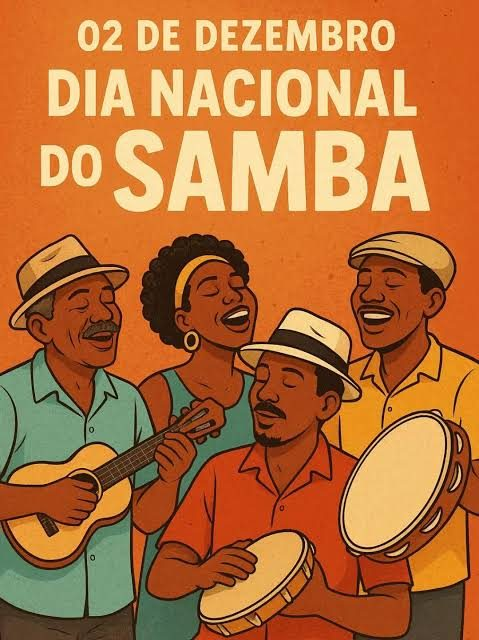

Foto: divulgaçãoDia do Samba
02/12/2026 · Centro Cultural Grajaú, Zona SulO Dia Nacional do Samba é celebrado em 2 de dezembro, em todo o país, para reconhecer a importância do ritmo na cultura brasileira. Em São Paulo, a Secretaria Municipal de Cultura reúne rodas, shows e encontros de samba em centros culturais e casas de cultura da cidade entre 29 de novembro e 6 de dezembro. No dia 2, a programação inclui o Samba da Esquina, no Centro Cultural Grajaú. No app você acompanha as notícias da programação.